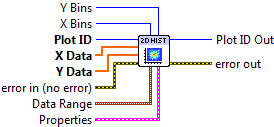
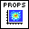
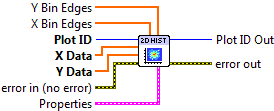

2D Histogram Plot¶
Make a 2D histogram plot from raw data.
This is the two-dimensional counterpart to Histogram Plot. Your raw data, supplied via the X Data and Y Data inputs, consists of a sequence of (X, Y) pairs. The plane is divided into 2D patches or bins into which your (X, Y) data is sorted.
By default, the color of the patch indicates the number of values which fall into that bin. This is the quantity which shows up if you use Add Colorbar to add a colorbar to the plot. If the Normalize setting is True, the color indicates the percentage of the total data points which fall into the bin.
This is a polymorphic VI, which provides two subVIs depending on how the bins are specified. To automatically generate a certain number of bins in X and Y, use 2D Histogram Plot (Automatic). To manually specify bins, use 2D Histogram Plot (Manual). The polymorphic VI will also automatically adapt based on the type of data wired to X Bins and Y Bins.
2D Histogram Plot (Automatic)¶
Make a histogram with a specific number of bins along each axis. In addition to your raw data, provide integers to X Bins and Y Bins specifying the number of bins desired along each axis. You can limit the range of the data displayed via the Data Ranges input; values outside these ranges will not be displayed.

 Plot ID/Plot ID Out
Plot ID/Plot ID Out- Plot identifier. Plot ID Out always contains the same value as Plot ID.
 X Data
X Data- X coordinate for each data value.
- Y Data
- Y coordinate for each data value.
- X Bins
- Number of bins along the X axis. Default is 10.
- Y Bins
- Number of bins along the Y axis. Default is 10.
 Data Range
Data RangeControls the range of data displayed.
 X Min
X Min- Values whose X coordinate is smaller than this will be dropped.
- X Max
- Values whose X coordinate is larger than this will be dropped.
- Y Min
- Values whose Y coordinate is smaller than this will be dropped.
- Y Max
- Values whose Y coordinate is larger than this will be dropped.
-  Properties
Property cluster, available under the “Properties” subpalette.
 Normalize
Normalize- If True, the value of each patch represents the percentage (0 to 100) of the values, rather than the raw number of counts.
- Colormap
Controls the colormap used to shade the patches.
 Map
Map- Colormap to use. See Colormaps for more info.
- Value Min
- Lower range for colormapped data; values smaller than this will all be plotted with the first color in the colormap.
- Value Max
- Upper range for colormapped data; values larger than this will all be plotted with the last color in the colormap.
- Scaling
- Colormap scaling mode. Currently only linear scaling is supported.
- Reverse
- Flip the colormap; for example, if a map has 0.0 as black and 1.0 as white, this will assign 0.0 as white and 1.0 as black.
- Display
Controls the overall appearance of the plot.
- Alpha
- Alpha blending value for this object (0.0 to 1.0). Default is 1.0 (fully opaque).
- Z Order
- Stacking order. Default is chosen based on the object type.

 Error In/Out
Error In/Out- Terminals for standard error functionality.
2D Histogram Plot (Manual)¶
Make a 2D histogram with the bin boundaries explicitly specified. In addition to your raw data, provide 1D arrays to X Bins and Y Bins which specify the bin edges. Note that since you are specifying the edges of the bins, if there are N elements in X Bins, N-1 patches will be displayed along the X axis.
- Plot ID/Plot ID Out
- Plot identifier. Plot ID Out always contains the same value as Plot ID.
- X Data
- X coordinate for each data value.
- Y Data
- Y coordinate for each data value.
- X Bins
- Locations of the bin edges along the X axis.
- Y Bins
- Locations of the bin edges along the Y axis.
- Properties
Property cluster, available under the “Properties” subpalette.
- Normalize
- If True, the value of each patch represents the percentage (0 to 100) of the values, rather than the raw number of counts.
- Colormap
Controls the colormap used to shade the patches.
- Map
- Colormap to use. See Colormaps for more info.
- Value Min
- Lower range for colormapped data; values smaller than this will all be plotted with the first color in the colormap.
- Value Max
- Upper range for colormapped data; values larger than this will all be plotted with the last color in the colormap.
- Scaling
- Colormap scaling mode. Currently only linear scaling is supported.
- Reverse
- Flip the colormap; for example, if a map has 0.0 as black and 1.0 as white, this will assign 0.0 as white and 1.0 as black.
- Display
Controls the overall appearance of the plot.
- Alpha
- Alpha blending value for this object (0.0 to 1.0). Default is 1.0 (fully opaque).
- Z Order
- Stacking order. Default is chosen based on the object type.
- Error In/Out
- Terminals for standard error functionality.
Example¶
Download Histogram 2D.vi,
or see Examples for a complete list of examples.
Axis Types¶
Both VIs may be used with rectangular axes only. Use with polar axes will result in 402905 - Operation Not Supported for Polar Plot. Likewise, only linear scales are supported. Use with log or symlog axes will result in 402906 - Operation Not Supported for Axis Scale.
Errors¶
Other information¶
If X Data or Y Data is empty, if either X Bins or Y Bins is set to 0 (Automatic), or has less than two elements (Manual), no plot is displayed.
If X Data and Y Data are different sizes, only the overlap will be displayed.
If X Bins or Y Bins is negative (Automatic), the default number of bins will be used.
If non-finite elements occur in either X Data or Y data, that particular (X, Y) pair is ignored, and will not be considered when computing the normalized histogram. Non-finite elements in X Bins and Y Bins are ignored. The ordering of elements in X Bins and Y Bins has no significance.